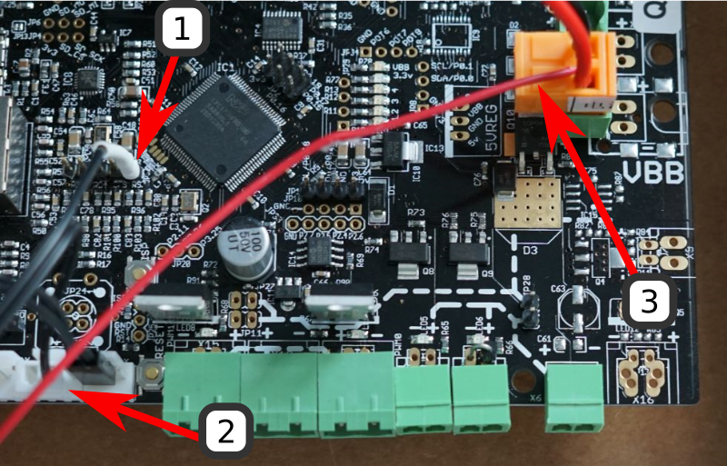

Thank you for the video, Thomas.
I found this video quite a while ago and I decided I’d give auto bed-tramming (bed-leveling) a go.
Final battle with a Melzi.
A cursory glance at the Melzi’s page on the Reprap website will only begin to illuminate the issues one will face if they attempt to modify the firmware on board in any manner. The Duplicator I3’s controller ships with Repetier which didn’t support any sort of auto bed-leveling at the time I tried to make this work.
So I figured I’d flash Marlin, which does support auto bed-leveling. That was a nightmare that required a specific version of Arduino, special hardware configurations for the Sanguino support, and other things that were nightmarey.
I gave up when I was about 30 hours in and bought a Smoothieboard.
Overview
I think its useful to look at the whole modification before looking at the grimy details.
The most important things to note about this setup are the locations of the Z-endstop and the inductive sensor.
- The inductive sensor takes the place of the stock fan. There’s a link to the rather uninspired adapter I modeled below.
- The Z-endstop has moved from Z-min on the lower left to Z-max on the upper right. I’ve included a link to the friction fit adapter below.
Parts
- An inductive sensor.
- Two 10k resistors for 12V systems, or 8.1k and 22k for 24V systems.
- A handy inductive sensor mount.
- A friction fit adapter for the new location of the Z-endstop.
Wiring It Up
Follow Tom’s directions for setting up the inductive probe and then you’re ready to plug it into the Smoothieboard.

If you look here you’ll see that
- GPIO P1.22 is the sensor output.
- GND at Z-min just because its convenient. Any ground will do.
- 12V power the inductive sensor.
The complete instructions for setting up the Z-probe for the Smoothieboard can be found here.
Relevant Smoothieboard Configuration
## Endstops
endstops_enable true # the endstop module is enabled by default and can be disabled here
#corexy_homing false # set to true if homing on a hbot or corexy
alpha_min_endstop 1.24^! # add a ! to invert if endstop is NO connected to ground
alpha_max_endstop nc # NOTE set to nc if this is not installed
alpha_homing_direction home_to_min # or set to home_to_max and set alpha_max
alpha_min 0 # this gets loaded after homing when home_to_min is set
alpha_max 200 # this gets loaded after homing when home_to_max is set
beta_min_endstop 1.26^! #
beta_max_endstop nc #
beta_homing_direction home_to_min #
beta_min 0 #
beta_max 200 #
gamma_min_endstop nc #
gamma_max_endstop 1.29^! #
gamma_homing_direction home_to_max #
gamma_min 0 #
gamma_max 145.1 #
## Z-probe
zprobe.enable true # set to true to enable a zprobe
zprobe.probe_pin 1.22^! # pin probe is attached to if NC remove the !
zprobe.slow_feedrate 5 # mm/sec probe feed rate
#zprobe.debounce_count 100 # set if noisy
zprobe.fast_feedrate 100 # move feedrate mm/sec
zprobe.probe_height 5 # how much above bed to start probe
#gamma_min_endstop nc # normally 1.28. Change to nc to prevent conflict,
# associated with zprobe the leveling strategy to use
leveling-strategy.three-point-leveling.enable true # a leveling strategy that probes three points to define a plane and keeps the Z parallel to that plane
leveling-strategy.three-point-leveling.point1 100.0,0.0 # the first probe point (x,y) optional may be defined with M557
leveling-strategy.three-point-leveling.point2 173.0,160.0 # the second probe point (x,y)
leveling-strategy.three-point-leveling.point3 0.0,160.0 # the third probe point (x,y)
leveling-strategy.three-point-leveling.home_first true # home the XY axis before probing
leveling-strategy.three-point-leveling.tolerance 0.03 # the probe tolerance in mm, anything less that this will be ignored, default is 0.03mm
leveling-strategy.three-point-leveling.probe_offsets -27,-40,2.24 # the probe offsets from nozzle, must be x,y,z, default is no offset
leveling-strategy.three-point-leveling.save_plane true # set to true to allow the bed plane to be saved with M500 default is false
Please don’t just copy this blindly. In fact, not all the kinks have been ironed out. I’ve still some issues with bed clearance that I haven’t tracked down yet.
‘gamma_max’ is the Z-max endstop. When setting the value (in mm) make sure to jog your printer as high as it will go and then measure the distance from the nozzle tip to the bed. Subtract a few millimeters and then dial in the exact distance to use. This way you should be able to avoid crashing into your bed like I did. A lot.
on_boot.gcode
G28 Z ; home z axis
G32 ; level bed (includes x and y axis home)
G0 X127 Y40 ; move to set nozzle height
G92 Z6.1 ; set nozzle height
This automatically levels the printer every time it turns on. There’s an issue that needs to be sorted where the absolute zero coordinates are not the same as the bed leveled coordinates that I haven’t managed to figure out yet. At this point I restart the printer if I need to print another object. This isn’t ideal, but again, it works.